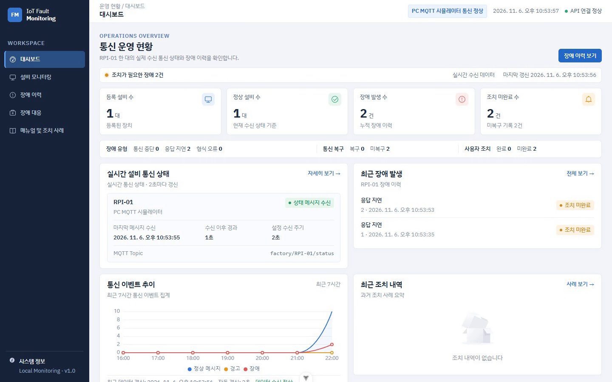
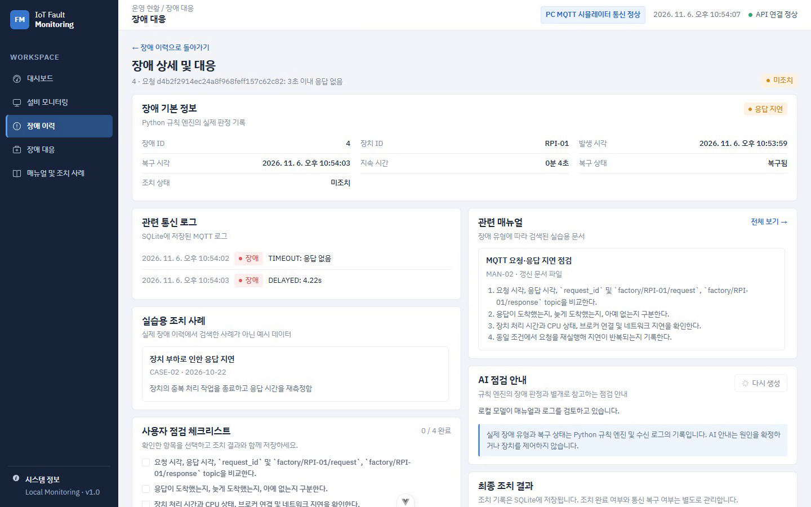

PC 시뮬레이터 · FastAPI · SQLite · Vue · Ollama
AI 점검 안내는 장애 상세에서만 생성한다.
마지막 유효 상태 메시지 후10초 이상 미수신
요청 후 약 3초 내일치하는 응답 없음
메시지 필수 값과형식 검증 실패
통신 복구와 사용자 조치 완료는 별도로 기록한다.

장애 유형별 건수
복구·미복구 상태
사용자 조치 현황
수신·판정 기록의 시각 해상도 동일
두 시간 측정은 시작점이 달라 직접 비교하지 않는다.
각 막대는 0~12초 축에 표시한 5회 측정 범위. PC 환경 결과다.

검색 근거가 없으면 모델을 호출하지 않는다.
동일 이벤트의 응답 생성 성공
별도 답변 1건의 근거 검토는 부분 적합. 출처 밖 권고가 남았다.
PC 시뮬레이터의 세 장애 유형
분리된 SQLite와 실제 MQTT 시연
Ollama 실패 시 모니터링 유지
실제 Raspberry Pi 네트워크 단절
AI 답변 5건의 문장별 근거 대조
장기 운영 시 오탐과 누락
질문 감사합니다.